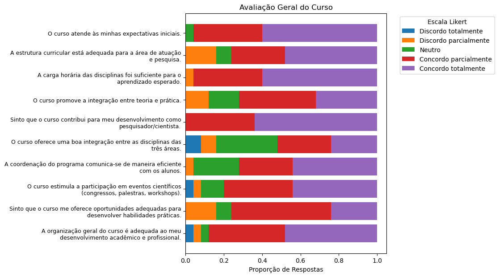
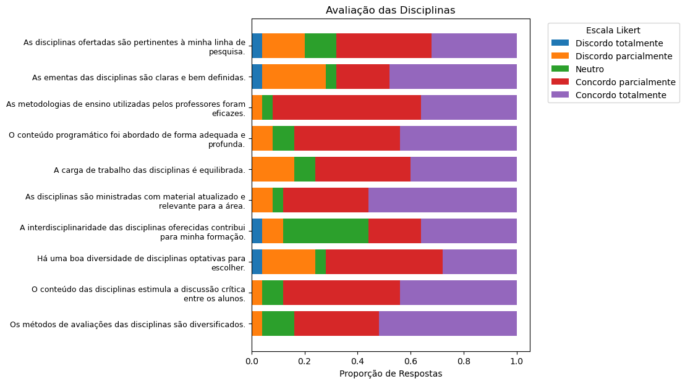
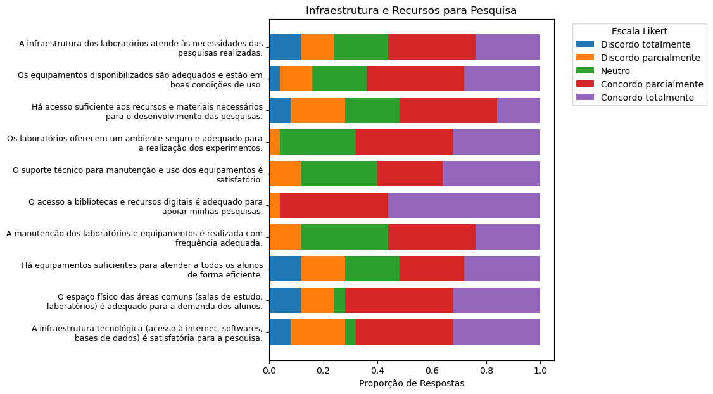
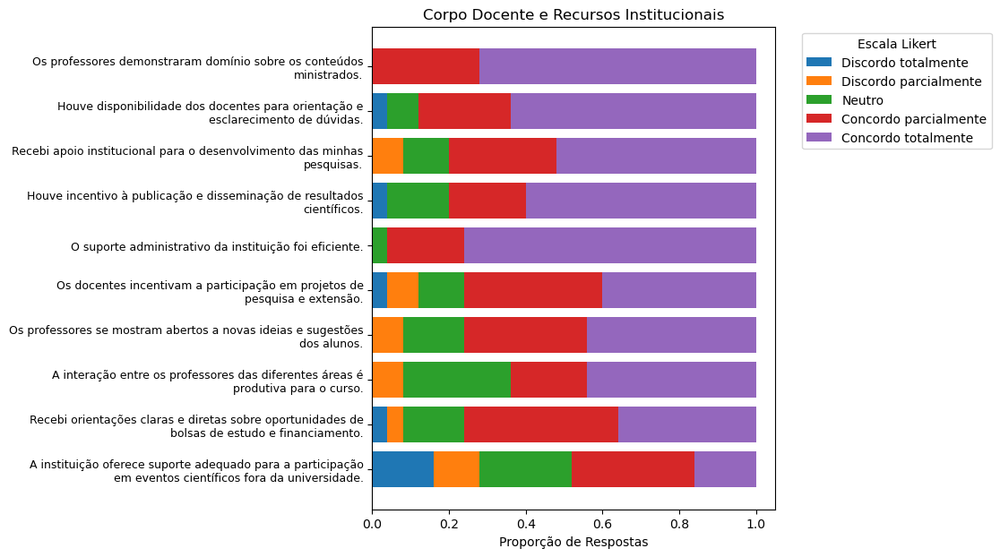
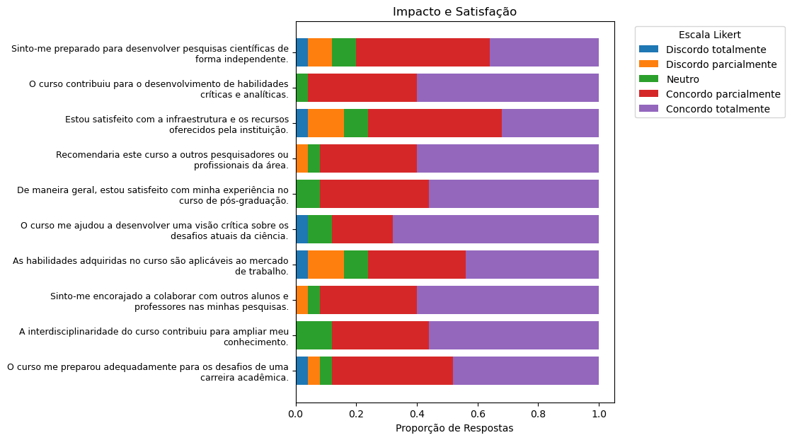
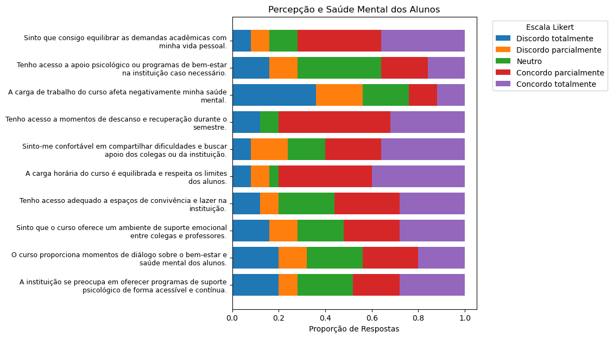

8 Programa do Ponto de Vista dos Discentes
Realizamos uma consulta junto aos discentes do Programa de Pós-Graduação em Tecnologia, buscando conhecer suas opiniões e percepções sobre o curso, bem como identificar oportunidades de melhoria. Essa consulta valoriza a visão discente na avaliação da qualidade e relevância dos programas de pós-graduação.
Neste levantamento, recebemos respostas de 25 alunos, o que consideramos ainda um baixo engajamento frente ao número de alunos no programa. Entretanto, compreendemos que a construção de um diálogo com os alunos é um processo contínuo e que este levantamento inicial contribuirá para embasar as próximas etapas de aperfeiçoamento do programa e fornecerá um ponto de partida para futuras análises.
Os gráficos foram organizados em seções que abrangem os principais aspectos do programa, conforme definido pela própria Comissão de Auto-Avaliação. As seções incluem: Avaliação Geral do Curso (Seção Avaliação Geral do Curso), Avaliação das Disciplinas (Seção Avaliação das Disciplinas), Infraestrutura e Recursos para Pesquisa (Seção Infraestrutura e Recursos para Pesquisa), Corpo Docente e Recursos Institucionais (Seção Corpo Docente e Recursos Institucionais), Impacto e Satisfação (Seção Impacto e Satisfação), e Percepção e Saúde Mental dos Alunos (Seção Percepção e Saúde Mental dos Alunos). Cada seção reflete dimensões específicas do programa. O questionário fornecido aos alunos possuem questões em que as respostas correspondem a uma escala Likert. A escala varia de “Discordo totalmente” a “Concordo totalmente”. Isso permite uma padronização dos gráficos apresentados em todas as seções.
8.1 Avaliação Geral do Curso
O gráfico a seguir mostra as respostas dos alunos sobre a “Avaliação Geral do Curso”. As perguntas feitas aos alunos podem ser vistas no próprio gráfico.

Pelo gráfico, é possível observar que:
Expectativas e Estrutura Curricular: a maioria dos alunos concorda que o curso atende às expectativas iniciais e que a estrutura curricular é adequada, com grande predominância de respostas em “Concordo totalmente”, seguido de “Concordo parcialmente”. Essa percepção positiva sugere que o curso oferece o que se espera em termos de conteúdo e organização.
Carga Horária das Disciplinas: vemos novamente uma predominância de respostas na faixa de “Concordo totalmente”, seguido de “Concordo parcialmente”. Essa distribuição indica que a maioria dos alunos considera a carga horária das disciplinas adequada para o aprendizado.
Integração Teoria e Prática: existe uma distribuição mais equilibrada nas respostas sobre a integração entre teoria e prática. Há uma proporção de aproximadamente 30% de respostas “Neutro” e “Discordo parcialmente”, o que indica que alguns alunos sentem que o curso poderia melhorar nesse aspecto.
Desenvolvimento como Pesquisador/Cientista: todos os alunos que responderam o questionário concordam que o curso contribui para o desenvolvimento acadêmico, o que indica que os objetivos formativos estão sendo alcançados. Nota-se a ausência de respostas neutras ou negativas neste aspecto.
Integração entre Disciplinas das Três Áreas: a percepção é predominantemente positiva . Apesar de termos um número muito reduzido de alunos concordando totalmente com a boa integração entre as disciplinas das três áreas, a soma das respostas “Concordo parcialmente” e “Concordo totalmente” chega a 50%. Vale ressaltar aqui que existe uma presença de respostas “Discordo totalmente” e “Discordo totalmente” mais acentuada do que nas outras questões desta seção, o que sugere ser essa interdisciplinaridade no que tange o conteúdo das disciplinas um aspecto a ser trabalhado. Além disso, é possível notar que muitos alunos responderam a opção “Neutro”, o que indica que não conseguiram se decidir nem por um lado e nem por outro.
Comunicação da Coordenação: observa-se uma opinião, em geral, positiva com a forma de comunicação da coordenação, dado que 70% dos alunos responderam “Concordo Totalmente” ou “Concordo Parcialmente”. No entanto, a presença de por volta de 25% dos alunos escolhendo “Neutro” pode indicar um nível misto de satisfação ou a presença de alunos que não precisaram se comunicar com a coordenação no decorrer do curso.
Participação em Eventos Científicos: a maioria dos alunos concorda que o curso incentiva a participação em eventos científicos, o que é positivo para a formação acadêmica e profissional dos alunos. No entanto, a presença de “Discordo parcialmente” e “Discordo Totalmente”, mesmo que em uma fração somada inferior a 10%, pode indicar oportunidades de melhoria neste quesito, dado que sugere casos individuais de insatisfação com o estímulo recebido para fazer uma publicação.
Oportunidades para Desenvolvimento Prático: embora a maioria esteja parcialmente satisfeita, uma quantidade pequena de alunos ainda responde “Discordo Parcialmente”, o que pode sugerir uma área para fortalecer as oportunidades práticas. Vale notar que não houve resposta do tipo “Discordo totalmente”, mas as respostas do tipo “Concordo totalmente” são as de menor número em toda esta seção. Assim, conclui-se que os alunos aceitam que há oportunidades para desenvolvimento prático de um modo geral, mas elas aparentam ainda ser tímidas a ponto de não ser possível responder positivamente com tanta contundência.
Organização Geral do Curso: o gráfico mostra uma resposta positiva geral, com predominância de “Concordo totalmente”, seguida de “Concordo parcialmente”. Isso reflete uma visão favorável dos alunos sobre a estrutura e a organização do curso. Algumas situações específicas podem ter gerado algumas respostas neutras e de discordância, mas a opinião geral é de que este quesito não parece ser um problema.
Como conclusão final desta seção, o curso apresenta uma avaliação positiva, especialmente em termos de atendimento das expectativas, estrutura curricular e desenvolvimento acadêmico. A área que apresenta uma maior diversidade de respostas foi a de integração entre as áreas do programa, podendo ser foco de melhorias.
8.2 Avaliação das Disciplinas
O gráfico a seguir mostra as respostas dos alunos sobre a “Avaliação das Disciplinas”. As perguntas feitas aos alunos podem ser vistas no próprio gráfico.

Observa-se uma alta taxa de aprovação entre os alunos em diversos aspectos das disciplinas ofertadas. A maioria das respostas encontra-se nas categorias “Concordo totalmente” e “Concordo parcialmente”. Esses dados indicam uma percepção positiva quanto à relevância e ao planejamento curricular das disciplinas. De modo mais específico, é possível observar que:
Eficácia das metodologias de ensino: a maioria dos alunos expressa concordância quanto à adequação das práticas pedagógicas, sendo que em torno de 90% responderam concordância parcial ou total com este tópico. Vale ressaltar que essa avaliação positiva ocorre também no item diversificação dos métodos de avaliação, em que se observa que por volta de 82% dos alunos indica algum tipo de concordância com a ideia de que os métodos de avaliação são diversificados. Um comentário final pode ser adicionado com o tópico que avalia se o conteúdo das disciplinas estimula a discussão crítica, onde se observa que por volta de 85% dos alunos expressa algum tipo de concordância, seja parcial ou total. Isso nos leva a concluir que os professores estão conseguindo conduzir as aulas e avaliações de modo positivo de acordo com a percepção dos alunos, fornecendo um aprendizado crítico necessário para formação de pesquisadores.
Atualização e relevância do material: o alto índice de respostas positivas sugere que os conteúdos são pertinentes à área e atualizados com frequência. Este é um item que merece destaque porque as disciplinas são ministradas por professores que, em sua grande maioria, fazem pesquisa na área em que ensinam, o que facilita o conhecimento do estado da arte nos tópicos abordados. Isso também ressalta o que pode ser concluído com o item Conteúdo programado foi abordado de forma adequada e profunda, com uma alta incidência de “Concordo totalmente” e “Concordo parcialmente”, o que unindo com os outros itens permite concluir que a percepção dos alunos é que os professores conseguem ministrar aulas com uma metodologia de ensino eficiente, com material relevante e com profundidade de conteúdo.
Carga de trabalho das disciplinas: o item foi bem avaliado, embora com uma porcentagem de aproximadamente 18% dos alunos expressando discordância parcial. Esse feedback pode sugerir que, para alguns alunos, o equilíbrio da carga de trabalho poderia ser melhor ajustado para melhor atender às suas expectativas. Essa hipótese precisaria de um estudo mais profundo, disciplina a disciplina, para ser validada. Entretanto, é preciso ressaltar que qualquer diminuição de carga trabalho pode também influenciar no item anterior, que foi muito bem avaliado no que diz respeito à qualidade das disciplinas.
Interdisciplinaridade das disciplinas: apesar de metade dos alunos expressarem que concordância total ou parcial, a quantidade de opiniões neutras é notável. Isso pode indicar que muitos alunos não necessitem de interdisciplinaridade em suas propostas de pesquisa, o que faria com que essa questão em relação às disciplinas não seja tão importante em algumas áreas, ou que a interdisciplinaridade existe, mas é muito tímida a ponto de não ser possível concordar ou discordar. De qualquer forma, é visto aqui um indicativo para futuras análises, dado que também houve a presença de respostas do tipo “Discordo parcialmente” e “Discordo totalmente”, apesar de estarem em quantidade reduzida.
Diversidade de disciplinas optativas: se observa um leve aumento nas respostas “Discordância parcial” e a presença de respostas “Discordância total”, indicando que alguns alunos gostariam de uma maior variedade de opções. Esse dado pode ser um indicativo para o programa considerar a ampliação do leque de disciplinas optativas, atendendo a um público mais amplo de interesses e necessidades específicas de formação.
Clareza e definição das ementas: aqui também se observa um leve aumento nas respostas “Discordância parcial”, acompanhada do aparecimento de algumas respostas do tipo “Discordância total”, indicando um ponto que pode ser melhorado. Futuras ações poderiam ser tomadas de modo a garantir que os professores adicionem nos seus planos de trabalho um programa mais detalhado, para que as ementas não sejam a única fonte de informação do conteúdo a ser fornecido.
No geral, o gráfico indica um nível elevado de satisfação dos alunos com as disciplinas do programa, especialmente em termos de relevância, clareza, profundidade e qualidade do conteúdo ministrado. Por outro lado, mais opções poderiam ser fornecidas para fornecer um ensino mais abrangente aos alunos de pós-graduação da unidade.
8.3 Infraestrutura e Recursos para Pesquisa
O gráfico a seguir ilustra a percepção dos alunos sobre a adequação das instalações e dos recursos disponibilizados pelo programa para apoiar suas pesquisas.

A seguir, detalhamos os principais aspectos avaliados:
Infraestrutura dos laboratórios e equipamentos adequados para as pesquisas: a maioria dos alunos concorda que a infraestrutura dos laboratórios atende às necessidades das pesquisas realizadas. Entretanto, observa-se um número moderado de respostas “Discordo parcialmente” e “Discordo totalmente”, o que pode indicar que alguns alunos sentem que há margem para melhorias na adequação e condições dos equipamentos. Vale ressaltar que na Faculdade de Tecnologia da Unicamp temos uma ampla gama de laboratórios (informática, construção, química, hidráulica, …), o que sugere que um estudo mais aprofundado, laboratório a laboratório, poderia ser feito para identificar se algum deles não está atendendo as expectativas. Vale observar uma grande correlação deste item com o item que avalia se os equipamentes são adequados e estão em boas condições de uso, com vários alunos com respostas parecidas para ambos os itens, o que pode sugerir que algum nível de insatisfação esteja ocorrendo por conta de equipamentos não adequados dentro dos laboratórios de pesquisa.
Acesso a recursos e materiais para a pesquisa: nota-se aqui que as opções “Concordo totalmente” e “Concordo parcialmente” não foram a maioria em relação às demais, apesar de serem em número superior à “Discordo totalmente” e “Discordo parcialmente”. Observa-se também que este item foi o que menos gerou respostas “Concordo totalmente” entre todos os avaliados nesta seção, sendo este número inferior a 8%. Isso nos leva a crer que este item necessita de ações específicas para se entender o que acontece com o acesso a recursos, de modo a se descobrir quais recursos e materiais estão em falta para a pesquisa. Além disso, se analisarmos em conjunto com o item que avalia se há equipamentos suficientes para atender a demanda dos alunos de forma eficiente, percebemos que ambos possuem pontos a serem melhorados. Nesse caso, sugere-se que os recursos, materiais e equipamentos que temos disponíveis precisam ser analisados para atender as expectativas dos alunos, pois a demanda pode ser superior ao que conseguimos oferecer.
Espaço físico das áreas comuns: a maioria dos alunos concorda total ou parcialmente que os espaços e áreas comuns são adequados para as demandas dos alunos, mas ainda é possível encontrar alunos que discordam total ou parcialmente dessa afirmação, sentindo que não são atendidos. Observa-se aqui uma baixa de frequência de neutralidade na resposta, o que indica que é um item que gera interesse para os alunos.
Infraestrutura tecnológica (internet, softwares, bases de dados, …): existe uma quantidade acentuada de alunos satisfeito total ou parcialmente, mas também uma quantidade perceptível de alunos insatisfeitos, tanto total quanto parcialmente. Nesse caso, conclui-se que este quesito divide opiniões e que a satisfação é mista. Vale ressaltar que a falta de estabilidade no acesso a internet presente em alguns dias no campus pode estar interferindo na análise mais que os demais (softwares e bases de dados). Por conta disso, uma nova consulta pode ser feita aos alunos sobre quais softwares e bases de dados são necessários para as suas pesquisas, de modo a ser possível atender posteriormente essas demandas.
Ambiente seguro nos laboratórios: nota-se uma boa aceitação entre os alunos, com a maioria concordando totalmente ou parcialmente. No entanto, um pequeno número de alunos marcou “Discordo parcialmente”, sugerindo que aspectos específicos de segurança ou conforto poderiam ser revisados. Observa-se também uma alta neutralidade neste tópico, o que pode indicar que muitos alunos não fazem uso das instalações de pesquisa que temos disponível.
Suporte técnico e manutenção dos laboratórios e equipamentos: a satisfação com o suporte técnico foi majoritariamente positiva, embora algumas respostas neutras e discordantes (apenas parcialmente) indiquem possíveis lacunas. A manutenção dos laboratórios e equipamentos, de forma similar, teve uma avaliação predominantemente positiva, mas com algumas discordâncias parciais que podem sinalizar a necessidade de revisões periódicas mais frequentes ou melhor atendimento às solicitações. Em ambos os tópicos, a alta incidência de neutralidade pode indicar que as necessidades de suporte e manutenção não são uma preocupação da maioria dos estudantes.
Acesso a bibliotecas, recursos digitais: este item foi amplamente bem avaliado, com grande parte dos alunos concordando totalmente. Vale observar que por volta de 95% dos alunos responderam que concordam total ou parcialmente com a tese de que o acesso é adequado para fazer o apoio à pesquisa.
No geral, os dados mostram uma percepção positiva sobre a infraestrutura oferecida, mas com pontos específicos que merecem atenção, como o acesso a recursos para a pesquisa, a manutenção dos laboratórios, o suporte técnico, a infraestrutura tecnológica e a capacidade das áreas comuns. Esse conhecimento pode ajudar o programa a ajustar seus recursos e investimentos para melhor atender às necessidades de pesquisa dos alunos.
8.4 Corpo Docente e Recursos Institucionais
O gráfico a seguir ilustra a percepção dos alunos sobre o corpo docente e recursos institucionais do programa.

A seguir, detalhamos os principais aspectos avaliados:
Domínio dos Conteúdos pelos Professores: todos os alunos concordam total ou parcialmente com a afirmação de que os professores demonstram domínio sobre os conteúdos ministrados, com uma proporção significativa de respostas que revelam concordância total, indicando confiança na qualidade do corpo docente que faz parte do programa. Vale ressaltar que nenhum aluno se mostrou neutro ou discordou de alguma forma da qualidade do corpo docente.
Disponibilidade para Orientação: os alunos consideram que há disponibilidade dos docentes para orientação e esclarecimento de dúvidas. A presença predominante de respostas concordando totalmente, seguidas de respostas concordando parcialmente, demonstra que, em geral, os professores estão acessíveis para apoiar os estudantes.
Apoio Institucional para Desenvolvimento de Pesquisa: o apoio institucional para o desenvolvimento de pesquisas é majoritariamente reconhecido, com alguns alunos se posicionando de forma neutra e algumas opções de discordância parcial. Isso sugere que o apoio institucional está muito bom, mas situações especícificas existem que podem ainda ser melhoradas.
Incentivo à Publicação e Disseminação de Resultados: qnquanto a grande maioria concorda que há incentivo à publicação, uma quantidade considerável de respostas neutras e discordantes mostra que há espaço para melhorias nesse aspecto, possivelmente com mais orientações para publicação.
Eficiência do Suporte Administrativo: a eficiência do suporte administrativo é amplamente reconhecida, com predominância de respostas positivas, dado que em torno ede 95% responderam concordância total ou parcial. O restante dos alunos se manteve neutro. Isso indica que uma comunicação efetiva entre os alunos, a secretaria de pós-graduação e a coordenação está ocorrendo para resolver os principais problemas dos alunos.
Incentivo à Participação em Projetos de Pesquisa e Extensão: a maioria dos alunos vê incentivo para participar de projetos de pesquisa e extensão, mas um pequeno grupo de alunos permanece neutro, ou discordam (total ou parcialmente) da afirmação, possivelmente sugerindo que essa prática poderia ser sistematizada para alcançar todos de maneira uniforme.
Abertura dos Professores a Novas Ideias e Sugestões: este item mostra um nível de satisfação positivo, mas a quantidade de respostas neutras ou discordantes, mesmo que baixa, indica que, em alguns casos, os alunos podem não sentir total abertura dos docentes a novas ideias, representando uma oportunidade para fomentar ainda mais um ambiente de diálogo.
Interação entre Professores de Diferentes Áreas: a interação entre professores de diferentes áreas é vista como produtiva para o curso, segundo a maioria dos alunos, com respostas predominantemente positivas. Esse fator é essencial para a interdisciplinaridade, destacando uma força do programa. No entanto, a quantidade notável de respostas neutras indica que o tema não parece influenciar o cotidiano da maioria dos alunos, ou a interação entre as áreas se mantém tímida a ponto de não permitir que os alunos concordem de maneira mais contundente.
Orientações sobre Bolsas de Estudo e Financiamento: apesar de 60% dos alunos concordar total ou parcialmente sobre a clareza nas orientações para bolsas, há uma proporção notável de respostas neutras ou discordantes, o que pode sugerir que as informações sobre financiamento poderiam ser divulgadas ou apresentadas de forma mais clara ou padronizada.
Suporte para Participação em Eventos Científicos Externos: há uma maior variabilidade nas respostas neste quesito. Embora muitos alunos concordem que o suporte existe, as respostas discordantes e neutras são significativas, indicando que o apoio para participação em eventos científicos externos pode não atingir de maneira uniforme todos os alunos e, portanto, apresenta uma área potencial para melhorias.
Em resumo, o gráfico sobre Corpo Docente e Recursos Institucionais revela que, embora haja uma percepção predominantemente positiva sobre a maioria dos aspectos, existem algumas áreas, como incentivo à publicação e participação em eventos, onde ainda se percebe um espaço para aprimoramento.
8.5 Impacto e Satisfação
O gráfico a seguir ilustra a percepção dos alunos sobre o impacto que o programa tem em suas carreiras e sobre a satisfação de um modo geral..

A seguir, detalhamos os principais aspectos avaliados:
Preparação para Pesquisa Independente: a maioria dos alunos se sente preparada para desenvolver pesquisas científicas de forma independente, com uma forte predominância de respostas “Concordo parcialmente”, seguida de “Concordo totalmente”. Isso indica que o curso está cumprindo seu papel em capacitar os alunos para a pesquisa autônoma. Uma chance de melhoria existe neste quesito com o intuito de fazer com que a resposta “Concordo totalmente” seja a mais predominante.
Desenvolvimento de Habilidades Críticas e Analíticas: o curso é reconhecido por contribuir para o desenvolvimento de habilidades críticas e analíticas, conforme evidenciado pela maioria das respostas positivas, tendo uma forte predominância de respostas do tipo “Concordo totalmente”. Esse resultado destaca a eficácia do programa em promover o pensamento crítico entre os alunos.
Satisfação com a Infraestrutura e Recursos: a satisfação com a infraestrutura e os recursos oferecidos pela instituição é evidente. No entanto, a concordância parcial é muito superior à concordância total, havendo ainda uma leve presença de respostas neutras e discordantes, o que sugere que alguns alunos podem ter enfrentado limitações específicas. As respostas reforçam o que foi concluído em seções anteriores específicas sobre infraestrutura, equipamentos e laboratórios, que indicam que recursos devem ser destinados para essas áreas.
Recomendação do Curso a Outros: a maioria dos alunos recomendaria o curso a outros pesquisadores ou profissionais da área, indicando uma percepção geral positiva da experiência e do valor do programa. A maioria das respostas neste quesito é de “Concordo totalmente”.
Satisfação Geral com o Curso: a satisfação geral com a experiência no curso de pós-graduação é alta, com predominância de respostas positivas, dentre elas o “Concordo totalmente”, mostrando que a maioria dos alunos considera que o curso está atendendo suas expectativas.
Desenvolvimento de Visão Crítica sobre Desafios da Ciência: o curso tem ajudado os alunos a desenvolver uma visão crítica sobre os desafios atuais da ciência, com uma maioria expressiva de respostas positivas do tipo “Concordo totalmente”. Este é um aspecto importante para formar profissionais conscientes do atual cenário científico.
Aplicabilidade das Habilidades ao Mercado de Trabalho: embora a maioria dos alunos considere que as habilidades adquiridas são aplicáveis ao mercado de trabalho, há uma proporção, mesmo que pequena, de respostas neutras e discordantes, sugerindo que a relevância prática do curso poderia ser ainda mais destacada ou ampliada para atender de maneira uniforme todos os alunos do curso.
Encorajamento à Colaboração: os alunos revelam que se sentem encorajados a colaborar com outros alunos e professores, com respostas predominantemente positivas, o que reflete uma cultura de trabalho cooperativo dentro do programa.
Interdisciplinaridade e Expansão do Conhecimento: a interdisciplinaridade do curso é vista como um ponto positivo, contribuindo para ampliar o conhecimento dos alunos, um ponto importante dado o carater do programa de agregar professores de várias áreas do conhecimento. Nota-se aqui a ausência de respostas discordantes.
Preparação para Desafios Acadêmicos: verifica-se com as respostas que a preparação oferecida pelo curso para os desafios de uma carreira acadêmica é amplamente valorizada, com uma quantidade predominante de respostas positivas. Ainda assim, algumas respostas neutras e discordantes indicam que esse aspecto pode ser aprimorado para atender uniformemente às expectativas de todos os alunos.
Em resumo, o gráfico sobre Impacto e Satisfação mostra uma percepção bastante positiva do curso, especialmente em aspectos de preparação para pesquisa independente, desenvolvimento de habilidades críticas e encorajamento à colaboração. Áreas como a aplicabilidade das habilidades ao mercado de trabalho e a preparação para desafios acadêmicos poderiam receber atenção adicional para garantir uma experiência ainda mais completa e satisfatória.
8.6 Percepção e Saúde Mental dos Alunos
O gráfico a seguir ilustra a percepção dos alunos em questões relacionadas à saúde mental.

A seguir, detalhamos os principais aspectos avaliados:
Equilíbrio entre Demandas Acadêmicas e Vida Pessoal: a maioria dos alunos sente que consegue equilibrar as demandas acadêmicas com a vida pessoal, indicando que o curso permite uma gestão razoável das responsabilidades acadêmicas sem comprometer outras áreas de suas vidas.
Acesso a Apoio Psicológico e Programas de Bem-Estar: observa-se uma presença significativa de respostas neutras e discordantes sobre o acesso a apoio psicológico ou programas de bem-estar, o que sugere uma área urgente para potencial melhoria na oferta e comunicação do apoio psicológico fornecido pela Unicamp a alunos de graduação e pós-graduação. A quantidade de respostas negativas é muito similar à quantidade de respostas positivas.
Impacto da Carga de Trabalho na Saúde Mental: analisando o gráfico, gera-se uma preocupação evidente com a carga de trabalho do curso, pois uma parcela considerável dos alunos concorda que ela afeta negativamente a saúde mental. Este é um ponto importante a ser discutido e possivelmente revisto para assegurar o bem-estar dos alunos. Vale ressaltar que esta questão foi a que mais recebeu respostas negativas dentre todas as que foram propostas no questionário, o que mostra o quão sensível é o tema.
Acesso a Momentos de Descanso e Recuperação: a percepção sobre a disponibilidade de momentos de descanso durante o semestre é positiva. Entretanto, com bastante variação, com respostas que vão desde de concordância total a discordância total.
Conforto em Compartilhar Dificuldades: a percepção dos alunos sobre o tema é mista e não uniforme, apesar de a maioria dos alunos declarar que se sente confortável em compartilhar dificuldades e buscar apoio, percebe-se que todas as respostas receberam uma porcentagem expressiva de respostas. Isso sugere uma atmosfera geral de confiança entre colegas e apoio institucional, mas que não atende a todos de maneira uniforme, sendo necessário encontrar os grupos de alunos que estão com dificuldades e fornecer direcionamento apropriado.
Equilíbrio da Carga Horária: a carga horária é percebida como equilibrada por uma parcela dos alunos, embora ainda haja espaço para ajustes, conforme indicado pelas respostas discordantes, que apontam para alunos que podem estar sobrecarregados. As respostas positivas foram em grande parte de concordância parcial, o que reforça a ideia de que há oportunidades de melhoria.
Acesso a Espaços de Convivência e Lazer: vários alunos estão satisfeitos com o acesso a espaços de convivência e lazer, o que é positivo para o bem-estar. Entretanto, uma parcela considerável dos alunos não têm encontrado esses espaços, algo reforçado pela quantidade de respostas discordantes.
Ambiente de Suporte Emocional: a percepção de que o curso oferece um ambiente de suporte emocional é mista, o que sugere que um estudo precisa ser feito para viabilizar um ambiente mais seguro do ponto de vista emocional para todos. Observa-se que todas as opções foram escolhidas pelos alunos em proporções muito similares.
Momentos de Diálogo sobre Bem-Estar e Saúde Mental: a oportunidade de diálogo sobre bem-estar e saúde mental retornou uma resposta mista e não uniforme, assim como várias outras nesta seção. A quantidade de alunos satisfeitos parece ser muito similar à quantidade de alunos com respostas negativas para este item. Além disso, muitos alunos se demonstraram neutros. Isso sugere que este item precisa de análises mais aprofundadas para atender a todos.
Preocupação Institucional com Programas de Suporte Psicológico: assim como o item anterior, as opiniões ficaram bastante divididas entre alunos que reconhecem a preocupação da instituição em oferecer suporte psicológico acessíveis e alunos que discordam dessa afirmação. O que se pode concluir é que os programas não estão atendendo a todos de forma uniforme, o que caracteriza que esforços devem ser direcionados para tarefas de suporte psicológico.
Em resumo, o gráfico mostra que, embora exista entre alguns alunos a sensação de suporte emocional e equilíbrio no curso, a carga de trabalho e o acesso a recursos de apoio psicológico são pontos a serem melhorados para garantir a saúde mental e o bem-estar de todos. Os programas e apoio psicológicos não estão atendendo a todos de maneira uniforme e uma parcela grande dos alunos se sente sobrecarregada. Dentre todos as seções do questionário, esta é a que sugere maior atenção.
8.7 Considerações Finais das Questões Objetivas
As respostas dos alunos permitem uma visão abrangente sobre as percepções e avaliações destes em relação ao programa de pós-graduação. A seguir, sintetizamos os principais pontos positivos e negativos, assim como as áreas que demandam atenção prioritária.
Principal Ponto Positivo: um dos aspectos mais elogiados pelos alunos é o corpo docente. Os professores são amplamente reconhecidos pelo domínio dos conteúdos ministrados e pela disponibilidade para orientação e esclarecimento de dúvidas. Essa relação com os docentes gera confiança e respeito para o ambiente de aprendizado, merecendo ser valorizada. A oportunidade de colaboração entre alunos e professores foi mencionada com destaque positivo. Muitos alunos sentem que o curso contribui para uma formação abrangente, estimulando o desenvolvimento de uma visão crítica e analítica. Além disso, o incentivo à participação em eventos científicos e a abertura dos professores para novas ideias contribuem para a melhoria do ambiente acadêmico.
Principal Ponto Negativo: entre os desafios identificados, a carga de trabalho e seu impacto na saúde mental surge como uma questão mais urgente. Muitos alunos relataram que a carga horária afeta negativamente sua saúde mental, destacando a necessidade de iniciativas que promovam o bem-estar e o equilíbrio entre vida pessoal e acadêmica. Embora a Unicamp ofereça programas de suporte psicológico pelo SAE, a percepção é de que eles poderiam ser mais acessíveis e eficazes.
Ponto Passível de Novos Estudos: outro ponto de atenção é a infraestrutura e recursos de pesquisa. Apesar de alguns alunos estarem satisfeitos, há uma insatisfação de outros com relação ao acesso a recursos para pesquisa, à manutenção e quantidade de equipamentos disponíveis, sugerindo que a demanda por recursos seja maior do que a oferta atual. Esse aspecto merece uma análise cuidadosa, pois impacta diretamente na capacidade dos alunos de desenvolverem suas pesquisas.
Ponto Passível de Melhorias: a diversidade de disciplinas optativas e a clareza das ementas também são áreas que poderiam ser aprimoradas. A percepção é de que o programa poderia oferecer uma maior variedade de disciplinas alinhadas às diversas áreas de atuação dos alunos, permitindo uma formação mais pertinente às linhas de pesquisa dos alunos.
8.7.1 Prioridades de Ação
Com base na análise, as prioridades de ação são:
Apoio ao Bem-Estar: a carga de trabalho deve ser avaliada para garantir que está adequada e balanceada. Adicionalmente, divulgar e talvez aprimorar os programas de suporte psicológico, tornando-os mais acessíveis e efetivos. Isso é fundamental para assegurar que os alunos possam manter sua saúde mental ao longo do curso.
Investimento em Infraestrutura de Pesquisa: aumentar a quantidade e a qualidade dos equipamentos de laboratório e melhorar a manutenção dos recursos existentes. Isso é crucial para atender às necessidades dos alunos e permitir que desenvolvam pesquisas de maior qualidade.
Diversidade e Atualização Curricular: ampliar a oferta de disciplinas optativas e assegurar que o conteúdo que será ministrado esteja presente de maneira mais clara de antemão.
Em resumo, o programa apresenta uma base sólida, com pontos fortes que merecem ser destacados e preservados, como a competência dos docentes e o estímulo à participação científica. Ao mesmo tempo, há desafios que precisam ser abordados, principalmente no que diz respeito à carga horária, saúde mental e à infraestrutura de pesquisa de um grupo específico de estudantes que demonstrou insatisfação.
8.8 Respostas Abertas dos Alunos
Além das perguntas objetivas, os alunos tiveram a oportunidade de responder a um conjunto de questões abertas, proporcionando feedback qualitativo sobre o programa. As perguntas abertas visaram capturar a percepção individual de cada aluno sobre o curso, permitindo uma análise mais detalhada dos pontos fortes, aspectos que necessitam de melhorias e sugestões para aprimorar a experiência acadêmica.
Essas respostas fornecem detalhes que vão além dos números e permitem compreender as nuances das experiências dos alunos. Abaixo, inserimos as respostas, formatadas para facilitar a leitura e identificação dos temas abordados.